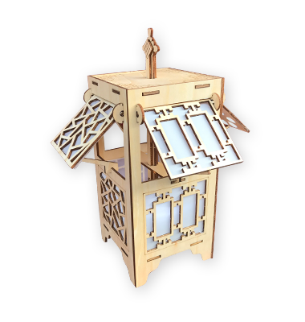
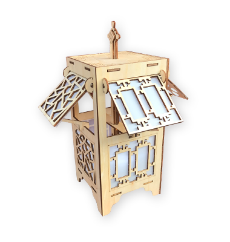

故宫博物院教育中心位于故宫熙和门南北两侧，面积约800平方米。经过一年多的项目规划、工程改造和室内设计，目前教育中心改造工程已经完成，现包括综合性教学空间4个、开放型阅览空间2个，可同时容纳200余人，此外还配套有故宫志愿者工作站和志愿者阅览室，这将有利于志愿服务和教育服务的结合开展。
故宫教育中心面向全社会正式开放。它将成为故宫博物院的教育平台和互动窗口，充分发挥各方面优势，举办针对各年龄段公众的文化课程和教育活动，举行讲座，举办培训，利用丰富的教育资源，让故宫教育惠及更多社会人群。
查看详情

 
